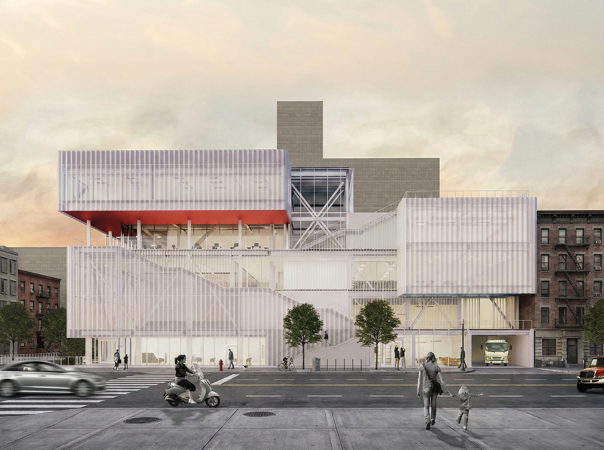
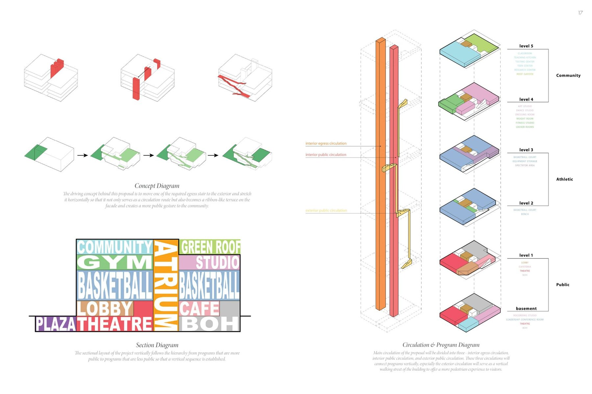
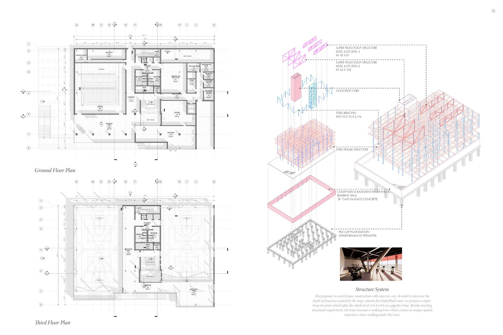
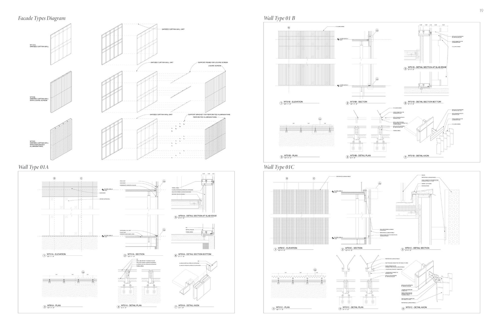
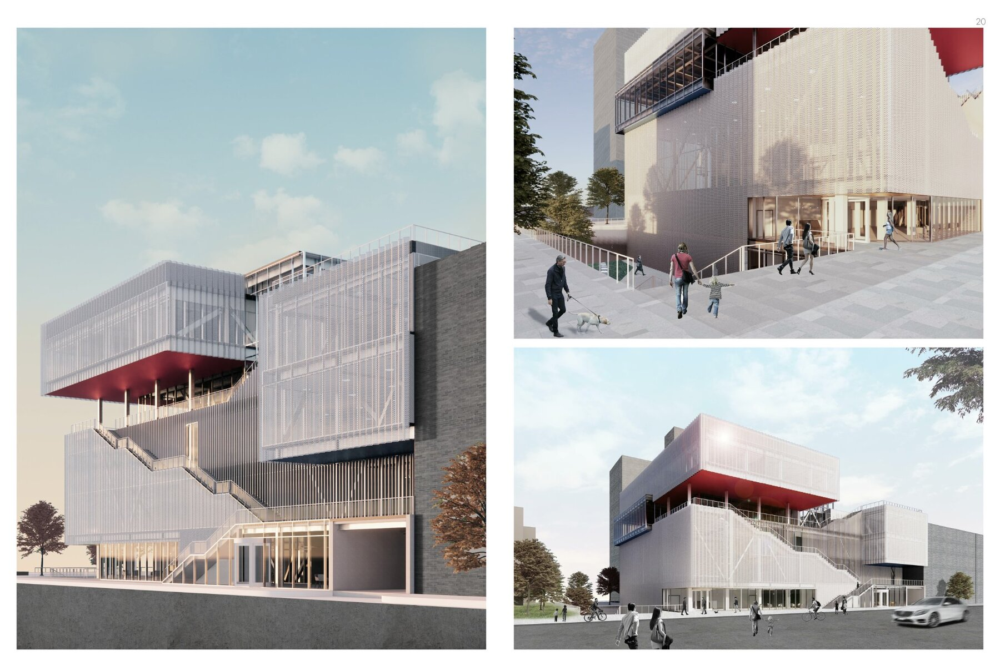

The Third Space
A buffer zone between space of work and space of living to create a space for the community to connect and interact.
Program
Cultural Center
Location
Bronx, New York
Year
2020
Team
With Tom Lin, Qing Hou, Claire Chen
Role
Façade Design, MEP
Lack of access to adequate amenities and communal spaces has been one of the key issues facing the Melrose neighborhood in the Bronx. The proposal envisions a "third space"—a buffer zone between work and home that provides the community a place to connect, learn, and recreate.

The building's most distinctive feature is an exterior circulation system that wraps the facade in a continuous ribbon of stairs, ramps, and terraces. This "walking street" transforms required egress into a public amenity—a vertical promenade that activates the building's perimeter and creates informal gathering spaces at every level.

Programs are organized vertically from most public to most private: a ground-level plaza and theater, athletic facilities including basketball courts in the middle levels, and community education and studio spaces at the top. This hierarchy is expressed in the building's massing, which steps back as it rises to provide daylight and outdoor space.

The structural system employs a steel frame with concrete core, designed to accommodate the large column-free spans required for basketball courts. A "super-truss" spanning levels 4-6 transfers loads around the gymnasium volume while becoming an architectural feature—a walking truss that visitors experience as they ascend through the building.

The facade system responds to the varied programs behind it with three wall types: a unitized curtain wall for transparency, louvered screens for shade and privacy, and perforated aluminum panels that filter light while creating visual texture. Each type is detailed for thermal performance and ease of maintenance.
